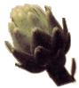
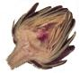

Now that you're well on your way to growing your own artichokes, you may find yourself suffering, as do so many, from artichoke anxiety. Have no fear. Artichokes really aren't that difficult. As with so much of life, different approaches achieve the same goal. A quick, informal poll of our office cooks revealed various ways to prepare the yummy thistle:
* Cut off the top of each artichoke (about an inch) and throw the tops in the compost container. Cut the stem of each artichoke very short and straight so it will sit up pretty. Trim the sharp tips from the leaves with a pair of scissors. Compost all the trimmings. Squeeze the juice of two large lemons into a big bowl of cold water and leave the artichokes in the lemon water until you're ready to cook them all. When you've got them all ready, drain the lemon water off and cook them all in a large pot of boiling, salted water for 25 to 35 minutes. Serve with a simple sauce of melted butter and lemon to taste.
* If you're feeding grownups, you can just warn them to watch out for the pointy part at the top, no need to trim each individual leaf. Cut off tops and stems. Place two or three in a large cooking pot. Pour water over the artichokes so they open up a little bit, until the pot is about half full. Boil slowly.You'll know they're done when you can reach in with your cooking tongs and gently pull one of the bottom leaves off. Serve with sauce of half mayonnaise, half melted butter and chopped garlic. Or mayonnaise mixed with your favorite hot sauce. (I like the green Tobasco™.)
* Trim the tops and stems - you know the drill. Peel off any discolored leaves. Then turn your artichoke over (top-side down) and smack it hard on the counter, which will encourage it to open. Place three or four artichokes in a deep casserole dish and stuff them liberally with grated Parmesan cheese and breadcrumbs. Sprinkle them generously with garlic powder, salt and pepper, to taste, then drizzle olive oil (about a half cup) over them. Pour water in the side of the pan (so you don't wash away the olive oil; etc.) up about two-thirds full. Bake at 375 degrees for an hour and a half or so, until the artichoke's bottom is easily pierced with a sharp knife. Remove carefully with tongs. Serve with good, crusty bread to sop up the olive oil mixture.
One universal direction holds true in each of these methods: Be sure and scoop out the fuzzy thing in the center. They don't call it a choke for nothing. And remember, that bottom part? You know, the solid stuff above the stem? That's the heart of the artichoke, which is the whole point of this effort. Bon appetit. Next lesson, removing artichoke fiber from your molars. - KC. Compton
|
 |
 |
|